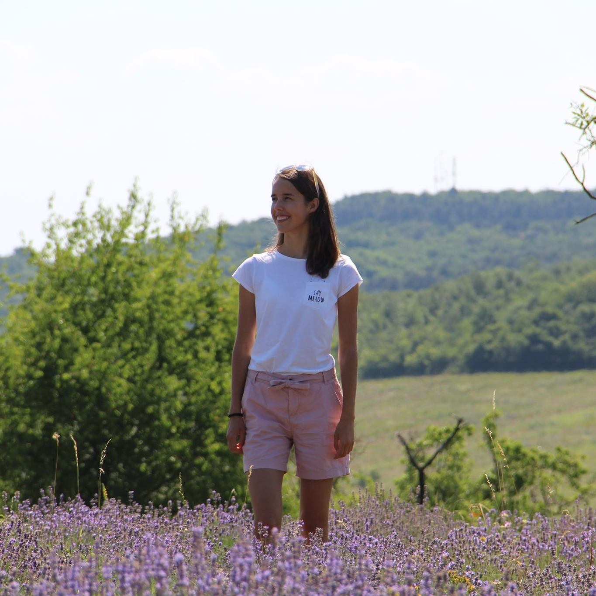
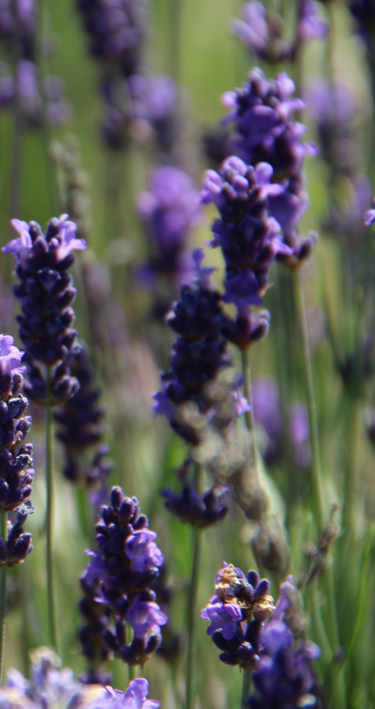

Rólam


Zámbó Barbara
Néhány szó magamról: elsőéves hallgató vagyok a Budapesti Műszaki- és Gazdaságtudományi Egytem Iparitermék- és formatervező mérnöki szakán. Szeretek fotózni, festeni, rajzolni és velük örömet okozni az embereknek. Mióta megkaptam Canon EOS 1300D fényképezőgépemet, a fotók minősége is magasabb lett és élménnyé vált számomra a fényképezés. Kedvelt témáim közé tartoznak a természet és ételfotók, de embereket is szívesen fotózok.